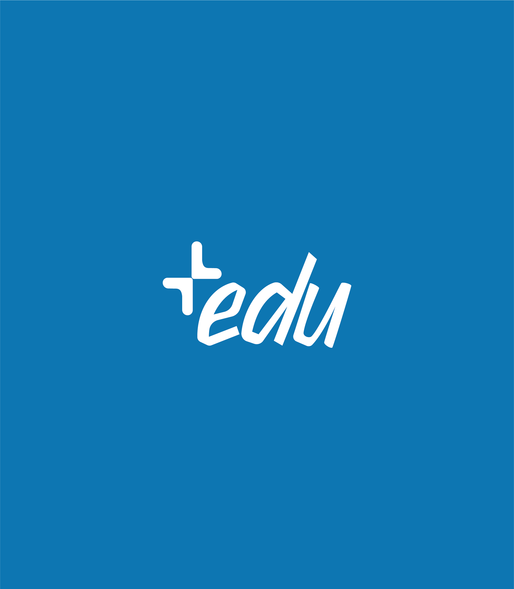
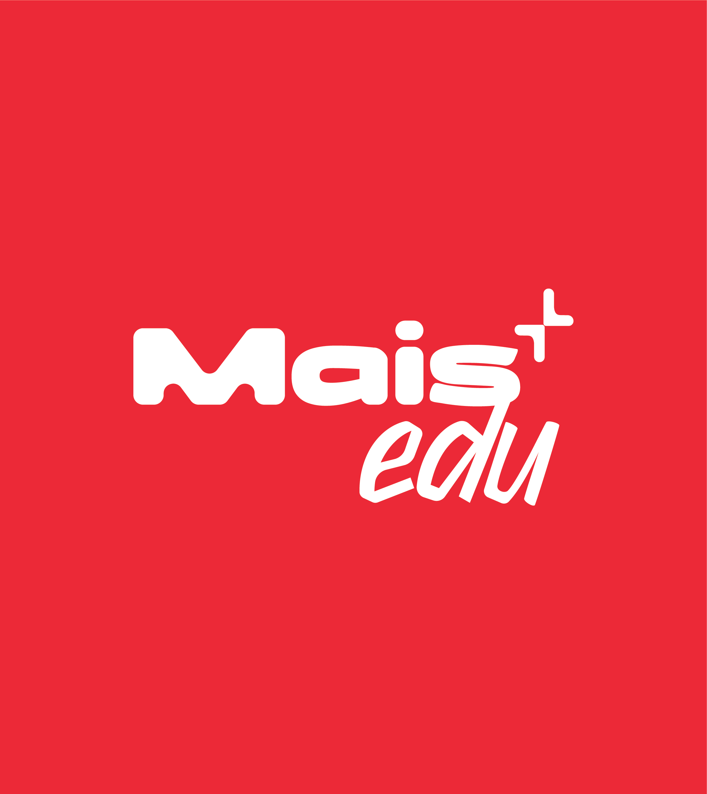
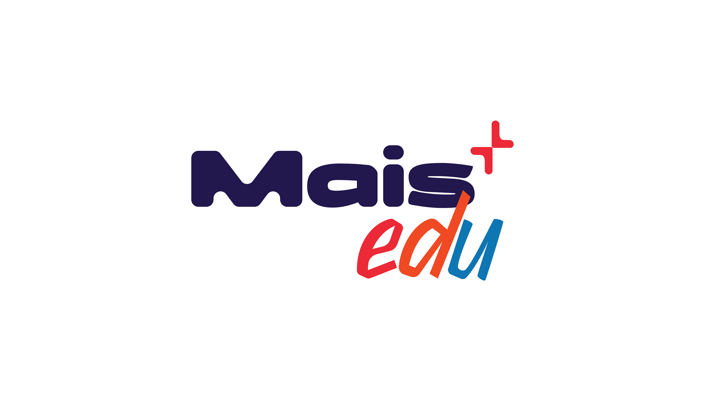

Branding · Social Media · 2025
As former co-founder and CMO of Maisedu, I wasn't just designing for an organization — I was building one. Maisedu was a nonprofit committed to transforming education for students in Brazil's public school system, delivering over 20 free initiatives rooted in the UN's Sustainable Development Goals, from extracurricular workshops to community events.
The design challenge was inseparable from the strategic one: create a visual identity flexible enough to hold everything the project touched — education, youth empowerment, social equity — while being bold enough to actually be seen. Because for nonprofits today, visibility isn't optional. Social media is where these movements earn their credibility, find their community, and grow their impact.
The new identity blends optimistic colors with a modular layout system and human-centered typography, built to scale across Instagram posts, printed materials, and live events without losing coherence. More than a visual update, it became a communication tool: one that made Maisedu look like what it already was — serious, purposeful, and worth paying attention to.
Working on this changed how I think about branding for social causes. Good design shouldn't be a privilege — and too often, the organizations doing the most important work are the ones with the least visual presence to show for it.

